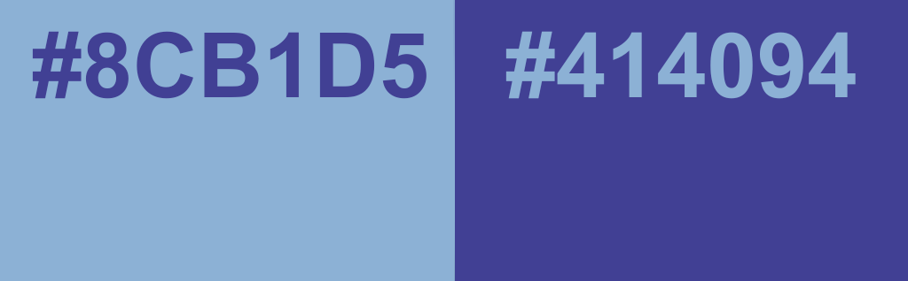
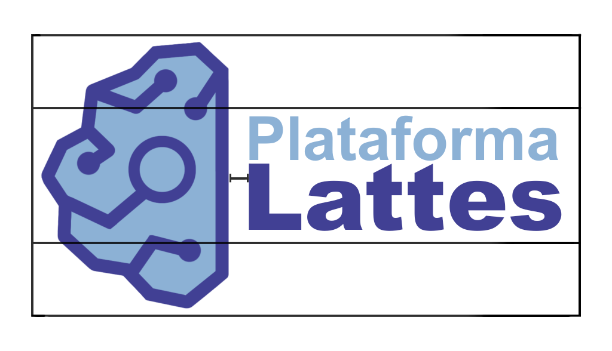
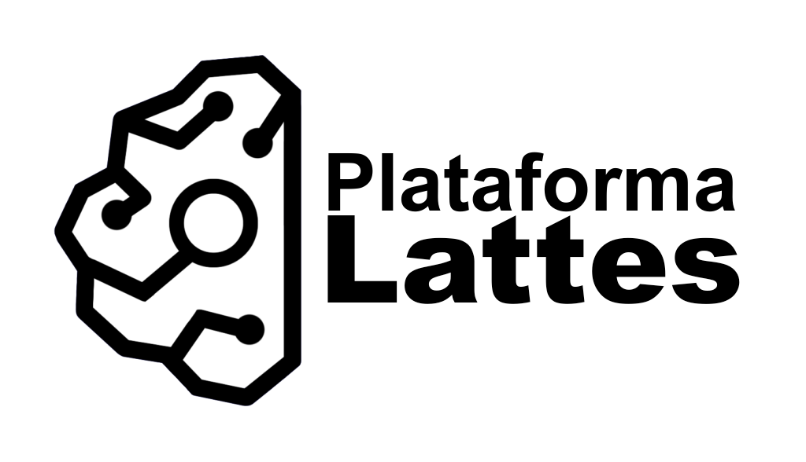

Manual de Identidade Visual - Plataforma Lattes
Projeto didático para a matéria de Interface do Usuário
Logomarca
A nossa proposta de nova logomarca da Plataforma Lattes apresenta um design moderno e minimalista, com traços inspirados em um cérebro digital, representando conexões do conhecimento, ciência e tecnologia. O símbolo possui contornos geométricos com terminações circulares conectadas por linhas retas, com uma lupa de pesquisa no centro. O visual busca remeter à rede de pesquisadores da plataforma.
Cores
A paleta de cores foi escolhida com base no site original. O símbolo é preenchido com azul claro (#8CB1D5) e contornado com azul escuro (#414094). O texto "Plataforma" segue o mesmo azul claro e "Lattes" o azul escuro.
Tipografia
Arial é utilizada na tipografia da logomarca e nos textos do site, de forma que os diferentes pesos da fonte marcarão a hierarquia de títulos.
ABCDEFGHIJKLMNOPQRSTUVWXYZ
abcdefghijklmnopqrstuvwxyz
0123456789
Plataforma Lattes - Arial
Plataforma Lattes - Arial
Plataforma Lattes - Arial
Plataforma Lattes - Arial
Plataforma Lattes - Arial
Plataforma Lattes - Arial
Distanciamento
A tipografia foi projetada para ocupar 50% da altura da figura, e deve ser localizada 70px ao lado direito central do logotipo.
Contraste
O conjunto de figuras, cores e tipografia foi projetado para se adequar a diferentes planos de fundo, evitando erros visuais de contraste.
Preta - Fundo Branco
Colorido - Fundo Branco

Branca - Fundo Preto

Colorido - Fundo Preto